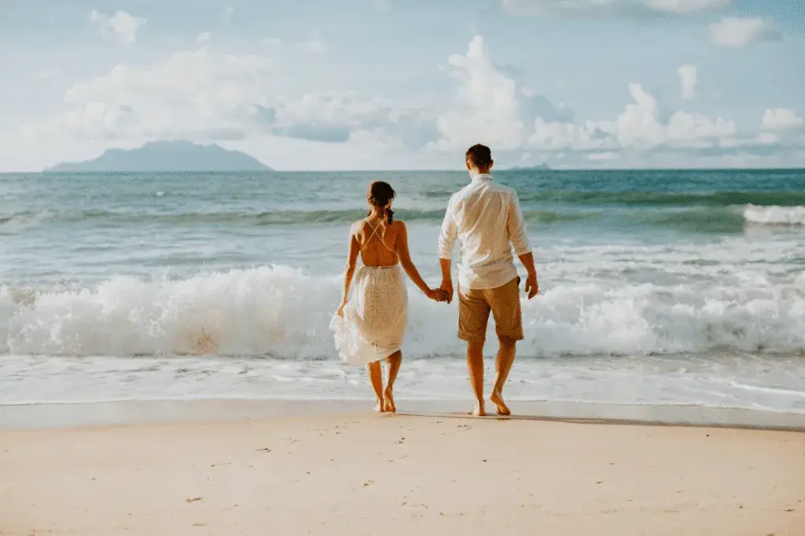
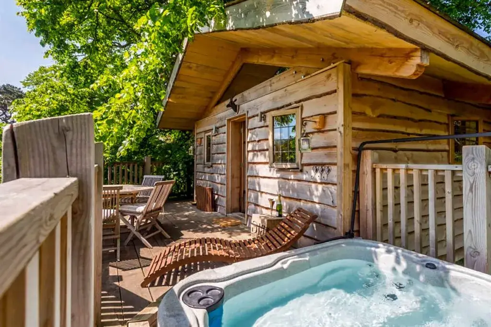
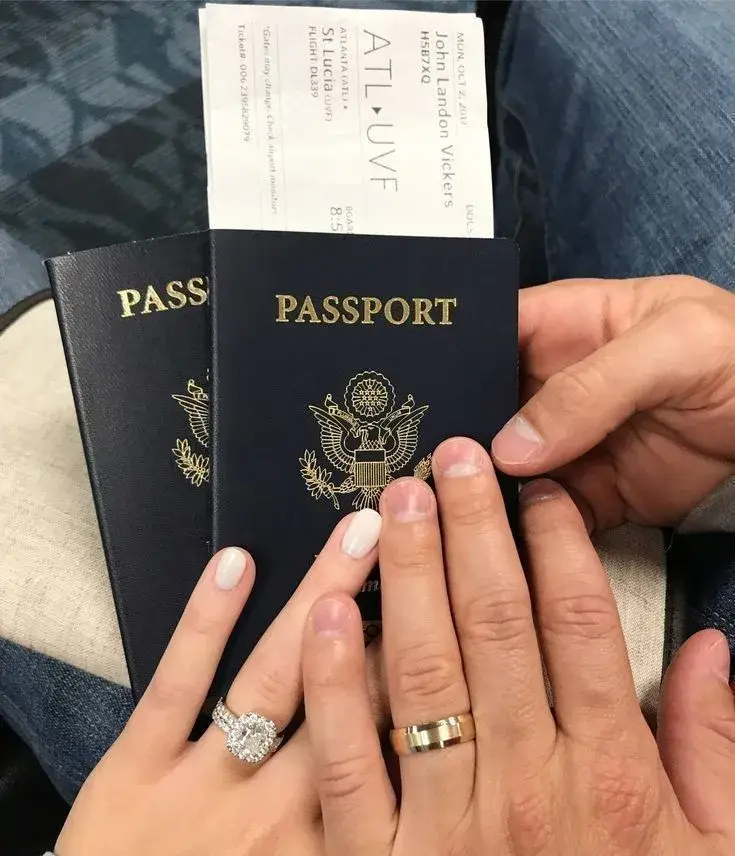

La lune de miel est l’opportunité idéale pour se détendre et se ressourcer après l’effervescence du mariage. Que vous choisissiez de partir explorer des destinations exotiques à l’étranger ou de profiter des régions françaises, telles que Bordeaux, l’essentiel est de rendre ce voyage inoubliable. De l’établissement du budget, aux choix des activités, en passant par la sélection des hébergements, chaque détail compte pour transformer ce séjour en un moment magique et mémorable. Voici quelques conseils pour organiser étape par étape une lune de miel inoubliable :

Quelle destination ?
Quel est le premier critère pour une lune de miel réussie et mémorable ? La destination, évidemment !
Êtes-vous plus attirés par des plages paradisiaques, des montagnes enneigées, des villes culturellement riches comme Bordeaux ou des safaris en pleine nature ? Si vous rêvez d’un cadre romantique, pourquoi ne pas envisager des destinations idylliques comme Tahiti, Venise ou encore les îles Fidji ? Et si vous êtes plutôt en quête d’aventure, que diriez-vous de partir à la découverte de la Laponie ou du Panama ? Ou préférez-vous rester en France, pour y découvrir ses nombreuses richesses ? Les options sont nombreuses, mais l’essentiel est de choisir un lieu qui vous fait rêver. Prenez en compte la saison pour bien choisir votre destination de noce !
Le printemps est là : vers quelle région aller pour votre lune de miel ? Je vous recommande le Japon pour les cerisiers en fleurs, l’Alsace qui est en fête pour Pâques, Le Costa Rica, en vert et bleu, et Cuba, sous le soleil des tropiques.
Vous voulez partir début mai ? Les meilleures destinations sont l’Irlande, le Laos, le Pérou et la Norvège.
Vous voulez partir en automne ? Privilégiez la Grèce, le Maroc, l’Ouzbékistan ou encore l’Égypte. Vous souhaitez partir en hiver à Noël ? C’est le moment où les aurores boréales de l’Islande illuminent le ciel et les flocons tombent…
Vous cherchez plutôt la chaleur, les plages tropicales ? Alors optez pour la Grèce, l’Australie, les Îles Canaries, la Malaisie. L’effervescence du Maroc et la tranquillité de l’Indonésie sont aussi très appréciables en hiver !
Choisissez l’hébergement idéal !
Le choix de l’hébergement joue un rôle important pour rendre votre lune de miel inoubliable.
Il existe une variété d’hébergements tels que les hôtels, palaces, villas, cottages sur pilotis, cabanes dans les arbres, igloos, péniches ou encore les complexes touristiques avec pension complète. À savoir que certains hébergements proposent des services spéciaux pour les lunes de miel, comme une décoration romantique dans la chambre ou un dîner privé sur la plage.
Avant de faire une réservation, consultez les avis, les prestations incluses (spa, restauration, activités…). Vous voulez un hébergement plus intimiste avec de la proximité ? Pourquoi ne pas partir en vanne pour un road trip sur la route des vins à Bordeaux ou à l’étranger pour découvrir plusieurs endroits ? Ces expériences singulières renforcent les liens et permettent de partager des instants d’intimité hors du commun.




Avez-vous anticipé le budget pour votre lune de miel ?
Après les dépenses liées au mariage, le but est d’économiser un maximum. Regardez les offres sur Groupon, il propose régulièrement des réductions sur les hébergements et des forfaits incluant de nombreux services. En effet, la formule tout-compris vous permettra d’économiser et de ne pas devoir garder du liquide sur vous.
Vous voulez obtenir les meilleurs tarifs de vol ? Pour ne rien louper, activez les alertes de vol.
Et si au lieu de créer une liste de cadeaux pour votre mariage, vous mettiez en place une cagnotte pour votre lune de miel ! La somme recueillie vous permettra de vous offrir un séjour inoubliable, et en plus, vos proches auront contribué à rendre ce voyage possible ! C’est un peu comme si vos amis et votre famille vous offraient un billet pour le bonheur !
Quelle date pour son voyage de noces ?
Un conseil, ne prenez pas l’avion le lendemain de votre mariage ! Si vous avez une longue traversée en avion, vous risquez d’arriver sur place fatigué, à peine capable de dire « bonjour », encore moins de profiter du sable chaud. De plus, laisser du temps vous épargnera le stress d’organiser en même temps le mariage et la lune de miel. Alors, pourquoi ne pas laisser un peu de temps entre les deux ?
Si vous êtes pressé, pas de panique ! Vous pouvez aussi organiser une mini-lune de miel juste après le mariage. Un séjour court, mais intense ! Et, après avoir récupéré un peu de vos émotions et de votre énergie, vous pourrez mettre de l’argent de côté pour une lune de miel plus longue, un ou deux ans plus tard.
Prévoyez les activités
Réfléchissez aux activités que vous voulez faire. Est-ce que vous désirez faire des randonnées, balades à vélos et découvrir les châteaux de Bordeaux, vous relaxer dans le jacuzzi ou près de la cheminée avec un bon livre ? N’oubliez pas que la lune de miel est aussi faite pour vous reposer et passer un moment à deux.
Essayez de ne pas surcharger votre planning en alternant entre des activités de découverte et de repos ! Votre lune de miel n’est sans doute pas faite pour visiter tout un continent à pied où vous enchaînerez les visites l’une après l’autre. Une lune de miel, C’est avant tout un moment de détente, une parenthèse en amoureux, pas un moment stressant !


Prenez de l’avance
Réservez vos vols, hébergements et activités bien à l’avance pour éviter le stress de dernière minute et bénéficier de tarifs avantageux. N’oubliez pas de vérifier les formalités administratives telles que les visas, les vaccinations et les assurances voyage.
Vous préférez partir juste après le mariage ? Ou plusieurs mois après, pendant vos vacances d’été par exemple ?
Pourquoi ne pas envisager de partir en dehors de la saison touristique pour éviter le flot de visiteurs ? Quand vous choisirez la date, tenez également compte des conditions climatiques.


Comment allez-vous immortaliser votre lune de miel ?
Pour que votre lune de miel vous laisse des souvenirs inoubliables, immortalisez-les en prenant des photos, des vidéos, en relatant vos sentiments et péripéties dans un carnet de voyage. Vous l’aurez compris, il est important de laisser une trace de votre lune de miel pour se remémorer les souvenirs dans 10, 15 ans…
En bref...
En suivant ces conseils, vous mettrez toutes les chances de votre côté pour organiser une lune de miel qui restera gravée dans votre mémoire. Que vous choisissiez une escapade idyllique ou une aventure palpitante, l’essentiel est de célébrer votre amour, union et d’en garder un souvenir inoubliable ! Bonne préparation et surtout, profitez !
Lovely Day Event c'est plusieurs types de prestations
L'organisation de mariage
Je vais intervenir sur toutes les étapes de vos préparatifs et vous guider dans vos choix. Je suis force de proposition pour que votre mariage ne ressemble qu’à vous.
Décoration de mariage
Créative et passionnée, je suis certifiée Wedding Designer et je conçois une ambiance scénographique qui correspond au thème de votre mariage.
Coordination le jour J
Je serai le chef d’orchestre pour gérer les différents prestataires, la mise en place de votre décoration et le déroulement de cette belle journée.